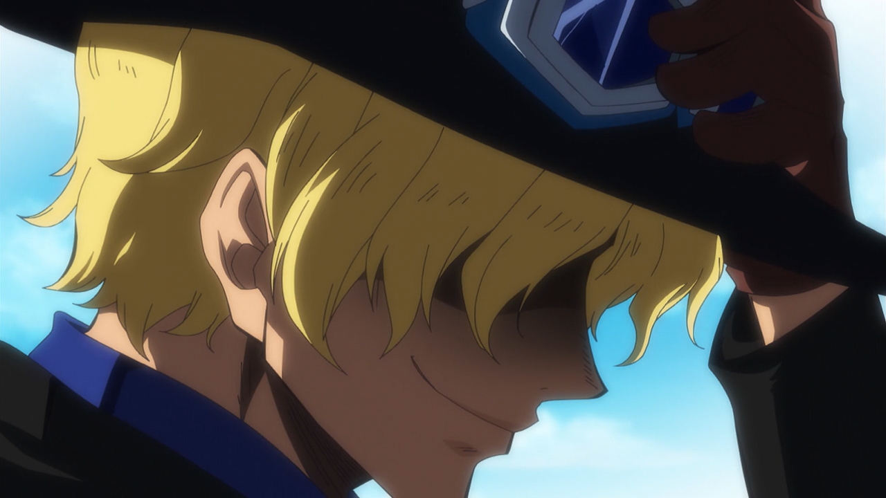

Boa Hancock
Sendo considerada a mulher mais bonita do mundo, Hancock é a capitã das Kujas,
uma tripulação pirata. Ela é Imperatriz de Amazon Lily, a ilha das mulheres,
onde tem a alcunha de Princesa Serpente. Boa é uma Shichibukai, sendo a única
mulher do grupo. A pirata, além de ser conhecida pela sua beleza, é também reconhecida
por seu grande poder,
sendo considerada uma das mulheres mais perigosas do universo de One Piece.
|
Sabo

Sabo é o chefe de gabinete do Exército Revolucionário,
reconhecido como o "No. 2" de toda a organização, sendo este
o ranking diretamente abaixo de Monkey D. Dragon.
Além de ser o irmão jurado de Monkey D. Luffy e Portgas D. Ace
, ele é descendente de nobre, o filho de Outlook III, bem como
através de seus pais o irmão adotivo de Sterry, o atual Rei do Reino
de Goa, a quem Sabo nunca reconheceu como tal.
|
Ace
Portgas D. Ace, foi o irmão mais velho adotivo de Luffy e Sabo, e filho do falecido Rei dos Piratas,
Gol D. Roger e sua amante, Portgas D. Rouge.
Ace era o comandante da 2ª divisão dos Piratas do Barba Branca
e capitão dos Piratas Spade. Ele também é o personagem
central da série de histórias de capa, A Grande Busca de Ace
pelo Barba Negra
Caçado pelo Governo Mundial por sua linhagem, Ace foi capturado e
condenado à morte, o que resultou na Batalha de Marineford em um
confronto de poderes. Ace foi salvo por Luffy, mas ele sacrificou
sua vida para proteger seu irmão mais novo de Akainu.
|
Barba Branca
Edward Newgate, mais conhecido como Barba Branca, era o
capitão dos Piratas do Barba Branca e era também conhecido como
"O Homem Mais Forte do Mundo" e "O Homem Mais Próximo do One Piece"
após a morte de Gol D. Roger. Era um dos Yonkou que governou o Novo
Mundo antes de morrer em Marineford pelas mãos de Barba Negra. O verdadeiro
tesouro para ele é a família, considerando todos os membros de sua tripulação como
filhos. Sua primeira aparição foi quando recusou a carta de Shanks que Rockstar
(na época novato do grupo de Shanks) estava enviando. Logo depois, mandou Rockstar falar para Shanks vir
até ele pessoalmente. Depois disso ele aparece no Episódio 316 em um encontro com Shanks, que pede para ele
impedir o encontro de Ace com Barba Negra. Esse dia ficou conhecido como o lendário dia em que o céu se dividiu
em dois. Sua grande aparição foi na
Batalha de Marineford, onde ele foi na tentativa de salvar Portgas D. Ace de sua execução.
|
|